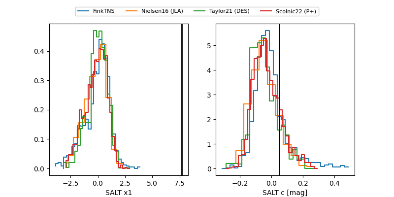

TNS: 2025wsp
YSE: 2025wsp
2025wsp (yse,tns)
PS25hhq (panstarrs)
equatorial (ra, dec) = (258.0815,+19.74545)
galactic (l, b) = (40.9784,+30.33907)

last ps1::g=21.42, ps1::r=20.82
2 ps1::g, 2 ps1::r detections